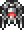
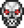
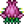
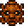
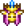
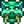
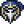
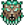

BOSS HARDMODE
Les boss Hardmode marquent les plus grandes étapes du jeu. Ils demandent préparation, équipement adapté, arènes et potions. L'ordre recommandé est très important pour éviter de te faire bloquer.
Ordre recommandé des boss Hardmode
- 1. Les Jumeaux
-

2. Le Destructeur -

3. Skeletron Prime -

4. Plantera -

5. Golem -

6. Impératrice de lumière (optionnelle) -

7. Duke Fishron (optionnel) -

8. Adepte lunatique -

9. Seigneur de la Lune (boss final)
(Ces trois premiers boss sont appelés les boss mécaniques)
Les Jumeaux (The Twins)
Invoquer :
- Objet mécanique (la nuit)
Description : Deux yeux volants :
- Spazmatism (flammes vertes)
- Retinazer (laser)
Stratégie :
- Grande arène horizontale
- Rester en mouvement constant
- Tuer Spazmatism en premier (le plus dangereux)
Armes conseillées :
- Arcs rapides
- Armes magiques longue portée
- Armes à distance Hardmode
Loot :
- Âmes de vue
- Hallowed Bars
- Objets clés pour progression
Le Destructeur
Invoquer :
- Ver mécanique (nuit)
Description : Un immense ver mécanique segmenté.
Stratégie :
- Plateformes en hauteur
- Armes à zone (perforantes)
- Attention aux sondes volantes
Armes conseillées :
- Armes à projectiles multiples
- Magie de zone
- Arcs perforants
Loot :
- Âmes de puissance
- Hallowed Bars
Skeletron Prime
Invoquer :
- Crâne mécanique (nuit)
Description : Une version mécanique de Skeletron avec 4 bras.
Stratégie :
- Détruire les bras en priorité
- Grande arène avec plateformes
- Esquiver constamment
Armes conseillées :
- Armes à distance rapides
- Armes magiques précises
Loot :
- Âmes de frayeur
- Hallowed Bars
Plantera
Condition :
- Tous les boss mécaniques doivent être vaincus
Invoquer :
- Détruire une fleur rose dans la jungle
Description : Boss de jungle extrêmement agressif.
Stratégie :
- Arène souterraine large
- Couper les lianes
- Phase 2 très rapide : mobilité essentielle
Loot :
- Clés du Temple de la Jungle
- Accès au Donjon Hardmode
- Armes puissantes
Golem
Invoquer :
- Dans le Temple de la Jungle à l'aide d'un petit artefact trouvé dans le donjon
Description : Boss lent mais très résistant.
Stratégie :
- Détruire les bras
- Rester mobile
- Facile comparé aux précédents
Loot :
- Armes avancées
- Amélioration du loot global
Impératrice de lumière (optionnelle)
Invoquer :
- Tuer un Prismatic Lacewing (petit papillon que vous pouvez trouver dans le Hallow) la nuit
- Vous pouvez aussi l'invoquer le jour mais elle aura plus de vie et elle vous tuera en un coup
Description : Boss extrêmement rapide et technique.
Spécificité :
- De jour = one-shot (défi extrême)
Loot :
- Armes parmi les plus puissantes du jeu
- Ailes ultimes
Duke Fishron (optionnel)
Invoquer :
- Pêcher dans l'Océan avec un ver de terre bleu trouvé dans le biome des champignons bleu
Description : Boss très agressif et rapide.
Stratégie :
- Arène aérienne
- Réflexes et mobilité
- Phase finale très dangereuse
Loot :
- Armes top-tier
- Montures et ailes très puissantes
Adepte lunatique
Condition :
- Après Golem
Invoquer :
- Aller au donjon et tuer les 4 Adeptes
Description : Boss magique, déclenche la fin du jeu.
Stratégie :
- Observer les attaques
- Ne pas frapper les illusions
- Combat plus tactique que brutal
Effet :
- Déclenche les Événements lunaires
Seigneur de la Lune (Moon Lord) – Boss final
Description : Le boss final de Terraria.
Stratégie :
- Détruire les yeux en priorité
- Mobilité extrême
- Potions indispensables
- Arène aérienne recommandée
Loot :
- Les armes les plus puissantes du jeu
- Fin officielle de la progression principale
Conseils généraux pour les boss Hardmode
- Toujours une arène adaptée
- Potions actives (Régénération, Endurance, Rage, Wrath)
- Accessoires reforgés
- Adapter ton build à chaque boss
Pause / Sécurité contre les spoilers
Vous avez maintenant vaincu (ou presque) tous les boss du jeu. La suite concerne les événements spéciaux, le farming massif et l'optimisation.
passer àla suite